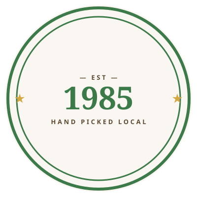
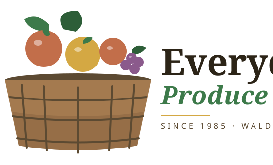
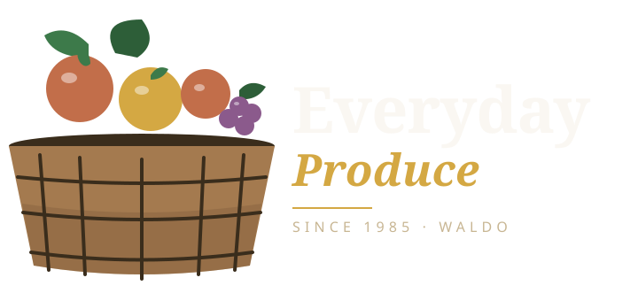
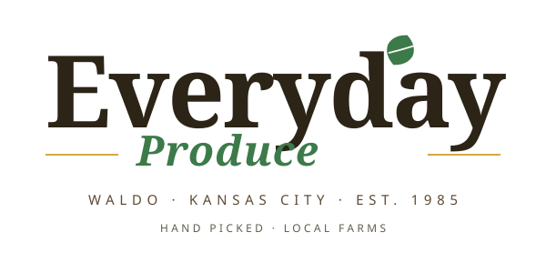

Three logo directions for Everyday Produce
Three different bets on what the logo should do. Each is shown at the sizes that actually matter: a 32px favicon in a browser tab, a site header, a business card, and on both the cream site background and a dark background (in case you ever want a t-shirt or awning). Same color palette as the site you already have. Pick the one that feels like the stand.
Concept A — The Stamp
Heritage · Trustworthy · ClassicA circular seal. The 40 years in business gets top billing — "est. 1985" is the first thing your eye lands on after the name. This is the logo for people who want Waldo's old, reliable produce stand. It looks like it's been on the sign forever, which is the point.

Everyday Produce
Concept B — The Basket
Warm · Illustrative · AppetiteA basket of fruit next to the wordmark. This logo does one thing the other two don't: it makes you hungry. For signage and storefront windows, that's a real edge. The illustration is geometric enough to print in one color if needed.

Everyday Produce
Concept C — The Wordmark
Modern · Editorial · SignageTypography doing all the work. "Everyday" in a big confident serif, "Produce" in an italic accent, a single leaf hanging above like a piece of fruit on a branch. This is the logo for the next 40 years, not the last 40. It scales cleanly from a phone screen to a road sign.

Everyday Produce
How to choose
Simon's readIf the stand is a neighborhood institution, Concept A is honest and durable. If you're trying to make someone hungry walking past, Concept B is the one. If you want the logo to age for 20 years and look expensive, Concept C is the pick.
No wrong answer. Point at the one that feels right and I'll tighten it up (kerning, a standalone mark-only version, color variants) and deliver final SVG + PNG at sign-print resolution. One round of revisions is included.